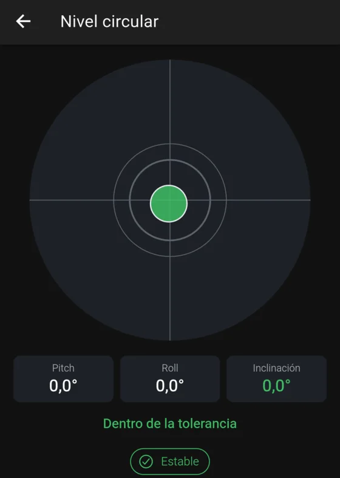
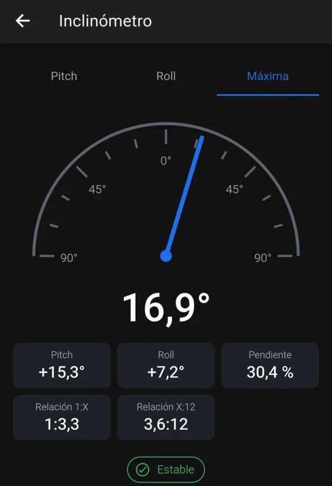
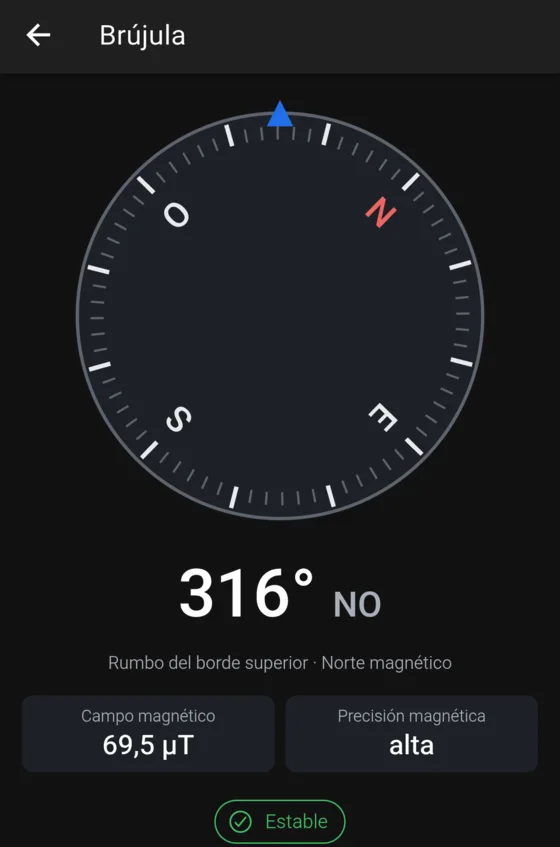

Nivel, inclinómetro, plomada y brújula en tu bolsillo.
LevelScope convierte tu teléfono Android en un juego de herramientas de medición y guarda un registro de lo que mides. Funciona completamente sin conexión, sin cuenta y sin publicidad.

Seis herramientas
Todo lo necesario para comprobar un ángulo
Cada herramienta lee los sensores de movimiento del teléfono, suaviza la lectura y avisa cuando está estable.
Nivel circular
Nivela una superficie en dos ejes con el teléfono acostado.
Nivel lineal
Para el teléfono sobre cualquiera de sus cuatro bordes y nivela a lo largo de una línea.
Inclinómetro
Lee un ángulo en grados, en porcentaje de pendiente o como relación 1:X o X:12.
Plomada
Comprueba que una pared, un poste o un marco estén a plomo.
Brújula
Rumbo magnético y punto cardinal, con aviso cuando algo interfiere.
Ángulo relativo
Toma una superficie como referencia y mide otra respecto de ella.
En uso
Lecturas claras, sin nada de más


Más que una lectura
Mide una vez y guárdalo
HOLD
Congela el promedio de un tramo de lecturas quietas, no solo la última, y muestra cuánto varió.
ZERO y objetivos
Toma la posición actual como cero, o elige un ángulo objetivo y recibe una vibración y un pitido al alcanzarlo.
Calibración
Una calibración guiada en dos pasos, con perfiles separados para con funda, sin funda o cada borde del teléfono.
Proyectos e historial
Guarda mediciones con nombre, notas y proyecto. Después búscalas, fíltralas y compáralas.
Exportación
Comparte tus mediciones en CSV para una hoja de cálculo, o en un archivo JSON completo.
Claro y oscuro
Sigue el tema y el idioma de tu teléfono.
Privacidad
Tus mediciones se quedan en tu teléfono
LevelScope no recopila nada, porque no puede: la app ni siquiera tiene permiso para usar Internet.
Sin conexión
Todas las herramientas funcionan sin red.
Sin cuenta
No hay nada en lo que registrarse.
Sin publicidad ni rastreadores
Ningún tipo de analítica.
Sin copia en la nube
Los datos salen del teléfono solo cuando tú exportas un archivo.
Leer la política de privacidad →
No es un instrumento certificado. La precisión depende de los sensores de tu teléfono, de la calibración y de cómo apoya el teléfono sobre la superficie. La pantalla puede mostrar centésimas de grado; eso es su resolución, no una garantía de exactitud. No lo uses donde un error tenga consecuencias de seguridad.